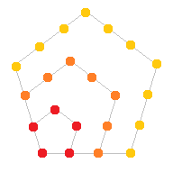

从勾股数到 Fermat 大定理
勾股数
由熟知的勾股定理 (Pythagorean theorem), 直角三角形的三边长 `a, b, c`
满足
`a^2+b^2=c^2`.
我们称满足上述不定方程的正整数 `a, b, c` 为一组勾股数
(Pythagorean triple), 如 `3, 4, 5`; `5, 12, 13`;
`7, 24, 25` 等. 以勾股数为边长的直角三角形叫勾股三角形.
注意到像 `3, 4, 5` 与 `6, 8, 10` 是本质相同的勾股数, 故定义勾股数
`a, b, c` 是本原的, 如果 `gcd(a, b, c) = 1`.
本原勾股数 `a, b, c` 两两互素, 且 `c` 为奇数, `a, b` 一奇一偶.
设 `d = (a, b)`, 则 `d^2 | a^2 + b^2 = c^2`, 这推出 `d | c`.
于是 `d | (a, b, c) = 1`, 即 `d = 1`. 同理 `(b, c) = (c, a) = 1`.
因为 `(a, b, c)` 两两互素, 它们中的偶数不超过一个, 假设 `c` 为偶数,
则 `a, b` 为奇数. 设
`a = 2m+1`, `quad b = 2n+1`, `quad c = 2k`,
则 `a^2 + b^2 -= 2 (mod 4)`, `c^2 -= 0 (mod 4)`, 矛盾.
因此 `c` 为奇数. 注意到 `a, b` 不全为偶数, 其中一个为奇数,
则另一个为偶数.
由于 `a, b` 地位对称, 不妨设 `b` 是偶数, 则本原勾股数的全体可以表示为
`a = u^2-v^2`, `quad b = 2u v`, `quad c = u^2+v^2`.
其中
`u gt v gt 0`, `quad (u, v) = 1`, 且 `u, v` 一奇一偶.
容易说明满足上述条件的 `(a, b, c)` 确实是本原勾股数. 下证必要性.
注意 `c-a, c+a, b` 都是正的偶数, 可设
`2A = c-a`, `quad 2B = b`, `quad 2C = c+a`,
`A, B, C` 为正整数. 因为 `b^2 = c^2 - a^2 = (c-a)(c+a)`, 我们有
`B^2 = A C`.
下证 `A, C` 互素. 设 `d = (A, C)`, 则
`d | C-A = a`, `quad d | C+A = c`,
从而 `d | (a, c) = 1`, 即 `d = 1`.
因为 `A C` 是平方数, 而 `A, C` 没有公共的素因子, 所以 `A, C`
都是平方数, 可设
`C = u^2`, `quad A = v^2`.
于是
`a = u^2-v^2`, `quad c = u^2+v^2`,
`b = 2 sqrt(B^2)`
`= 2 sqrt(A C)`
`= 2 u v`.
最后说明 `u, v` 满足的条件. 由 `C gt A` 有 `u gt v gt 0`.
由 `(A, C) = 1` 知 `(u, v) = 1`. 由 `a = u^2 - v^2` 是奇数知 `u, v`
一奇一偶.
下面使用数形结合的直观重新证明这一定理.
- 首先说明, 全体本原勾股数与单位圆在第一象限上的有理点一一对应.
方程两边同除以 `c^2` 得
`(a/c)^2 + (b/c)^2 = 1`,
这说明 `(a/c, b/c)` 是单位圆周上的点; 反之设 `(p, q)`
是单位圆上的有理点, 其中 `p, q` 是最简分数,
用它们分母的最小公倍数通分得到
`(p, q) = (a/c, b/c)`, 从而对应于勾股数 `(a, b, c)`.
容易说明 `(a, b, c)` 是本原的.
- 在第一象限的单位圆周上任取一点 `P(x_P, y_P)`. 又设 `A(-1, 0)`,
`k` 是 `AP` 的斜率, 则 `P` 点坐标和 `k` 的值一一对应.
显然 `P` 是有理点时, `k` 是 `(0,1)` 中的一个有理数;
下证 `k` 是 `(0,1)` 中的有理数时, 点 `P` 必为有理点.
 设 `k = v/u`, 整数 `u gt v gt 0`, 我们求 `P` 的坐标,
可以用 `tan 2 alpha` 的公式; 这里用复数来处理.
由已知, `"arg"(u+"i"v) = /_ PAQ`, 将这个复数平方,
就得到一个具有两倍辐角的复数
`(u+"i"v)^2 = u^2-v^2 + 2u v"i"`.
因为同弧所对的圆心角是圆周角的两倍, 我们有
`"arg"(u+"i"v)^2 = /_ POQ`.
又
`|(u+"i"v)^2|`
`= |u+"i"v|^2`
`= u^2+v^2`.
利用三角形相似得到 `x_P = (u^2-v^2)/(u^2+v^2)`,
`y_P = (2u v)/(u^2+v^2)`, 所以 `P` 是有理点.
设 `k = v/u`, 整数 `u gt v gt 0`, 我们求 `P` 的坐标,
可以用 `tan 2 alpha` 的公式; 这里用复数来处理.
由已知, `"arg"(u+"i"v) = /_ PAQ`, 将这个复数平方,
就得到一个具有两倍辐角的复数
`(u+"i"v)^2 = u^2-v^2 + 2u v"i"`.
因为同弧所对的圆心角是圆周角的两倍, 我们有
`"arg"(u+"i"v)^2 = /_ POQ`.
又
`|(u+"i"v)^2|`
`= |u+"i"v|^2`
`= u^2+v^2`.
利用三角形相似得到 `x_P = (u^2-v^2)/(u^2+v^2)`,
`y_P = (2u v)/(u^2+v^2)`, 所以 `P` 是有理点.
- 只要让斜率 `k` 取遍集合 `(0,1) nn QQ`,
就得到单位圆在第一象限的全部有理点,
从而得到全体本原勾股数.
圆锥曲线上的有理点
[来自讲义《MIT18: Rational Points on Conics》]
将寻找勾股数的问题转化为单位圆上的有理点, 这个方法可以推广到一般的圆锥曲线.
具体来说, 齐次不定方程
`a x^2 + b x y + c y^2 + d x z + e y z + f z^2 = 0`
满足 `z != 0` 的解可以转化为寻找整系数圆锥曲线
`a x^2 + b x y + c y^2 + d x + e y + f = 0`
上的有理点.
假设 `(x_0, y_0)` 是曲线上的一个有理点, 过该点作斜率为 `k` 的直线族, 只要 `k`
取遍全体有理数 (及 `+-oo`), 直线族与曲线的交点就确定了曲线上的全体有理点.
换言之, 令 `k = p//q`, 则上述不定方程的通解可由 `p, q` 参数化, 形如
`x = x(p, q)`, `quad y = y(p, q)`, `quad z = z(p, q)`.
[来自 レイ]
证明: 单位圆上存在无数个点, 它们两两间的距离均为有理数.
[来自 折棒的网友]
记 `A(-1, 0)`, `B(1, 0)`.
对于任一组勾股数 `a^2+b^2=c^2`, 可取点 `K` 使得 `KA = 2a//c`, `KB
= 2b//c`, 于是 `KA^2 + KB^2 = AB^2`, `K` 位于单位圆上.
依此法取 `K_1, K_2`, 则 `A B K_1 K_2` 是圆内接四边形, 由 Ptolemy 定理
`K_1 K_2 * AB + B K_1 * A K_2 = A K_1 * B K_2`.
因此 `K_1 K_2` 为有理数.
但勾股数有无穷多组, 所以这样的点有无穷多个.
[来自群友 我是绝妙的解析数论] 解不定方程 `1/a + 1/c = 2/b`.
[来自群友 问情明心]
方程化为 `b c + b a = 2a c`, 这是齐次方程. 和勾股数一样, 我们有两个观察:
一是只需求出本原解 `gcd(a,b,c) = 1`, 二是可以转化为曲线上的有理数解.
令 `a//b = x`, `c//b = y`, 问题化为求解曲线 `x + y = 2 x y` 上的有理点.
注意原点就是一个有理点, 取过原点的直线族 `y = k x`, `k` 是有理数. 则直线与曲线的交点是有理点;
反之曲线上的任一个有理点与原点连线的斜率是有理数. 从而只要 `k`
取遍全体有理数, 就得到曲线上的全体有理点.
令 `k = p//q` 为最简分数, 解得
`a//b = x = (1+k)/(2k)` `= (p+q)/(2p)`,
`c//b = y = (1+k)/2` `= (p+q)/(2q)`.
通分得到
`b = 2 p q`, `quad a = q(p+q)`, `quad c = p(p+q)`.
整系数圆锥曲线的化简
圆锥曲线上未必存在有理点, 一个例子是 `x^2 + y^2 = -1`.
为判定曲线 上是否存在有理点, 我们对方程
作进一步化简:
- 配方, 将方程化为形如 `a x^2 + b y^2 + c z^2 = 0`. 这是线性代数中二次型的标准操作.
注意这里的系数 `a, b, c` 不再是原方程的 `a, b, c`, 变量 `x, y, z` 也不再是原方程的 `x, y, z`.
-
我们可以假定系数 `a, b, c` 无平方因子. 假如 `c` 有平方因子 `d^2`, 可以换元 `d z mapsto z`,
得到新方程 `a x^2 + b y^2 + (c//d^2) z^2 = 0`, 消去这个平方因子.
- 约去公因子后, 可以假定 `gcd(a, b, c) = 1`.
进一步可以假定 `a, b, c` 两两互素. 假如素数 `p | a`, `p | b`,
方程两边模 `p` 得到 `p | c z^2`. 但 `p !| c`, 所以 `p | z`.
因此可以换元 `z mapsto p z`, 得到新方程 `(a // p) x^2 + (b // p) y^2 + c p z^2 = 0`.
这个变换使得 `a, b` 中减少一个因子 `p`, 而 `c` 增加一个因子 `p`, 总的来说因子 `p` 是减少的.
最后我们得到方程 `a x^2 + b y^2 + c z^2 = 0`, 其中 `a b c` 无平方因子
(这等价于 `a, b, c` 各自无平方因子, 且两两互素).
是时候请出 Legendre 定理了!
Legendre
设 `a, b, c` 是非零整数, `a b c` 无平方因子, 则不定方程
`a x^2 + b y^2 + c z^2 = 0`
有非平凡解 `(x, y, z) != (0, 0, 0)` 当且仅当以下条件全部满足:
- `a, b, c` 不同号.
- `-a b` 是模 `c` 的二次剩余,
`-b c` 是模 `a` 的二次剩余,
`-a c` 是模 `b` 的二次剩余.
"`rArr`":
-
假设不定方程有非平凡解, 则 `a, b, c` 不可能同号; 否则方程可以写为平方和的形式, 它只有平凡解.
-
假设 `(x, y, z)` 是一组非平凡解, 不妨设 `gcd(x, y, z) = 1`, 下证 `x, y, z` 两两互素.
假如素数 `p | x`, `p | y`, 则方程两边模 `p^2` 得到 `p^2 | c z^2`. 由于 `c`
无平方因子, 所以 `p | z`, 这与 `gcd(x, y, z) = 1` 矛盾.
- 下证 `-b c` 是模 `a` 的二次剩余.
任取 `a` 的一个素因子 `p`, 则 `b y^2 + c z^2 -= 0 (mod p)`.
由于 `y, z` 互素, `p` 不能同时整除 `y, z`. 不妨设 `p !| y`, 于是
`b y^2 -= - c z^2 (mod p)`,
`b -= -c z^2 y^-2 (mod p)`,
`-b c -= c^2 z^2 y^-2 (mod p)`.
因此 `-b c` 是模 `p` 的二次剩余. 由 `p` 的任意性及中国剩余定理 (CRT) 知道
`-b c` 也是模 `a` 的二次剩余.
"`lArr`":
-
设 `-b c -= k^2 (mod a)`, 于是在模 `a` 的意义下, 可以对方程因式分解:
`a x^2 + b y^2 + c z^2`
`-= b y^2 + c z^2 (mod a)`
`-= b(y^2 + c z^2 b^-1) (mod a)`
`-= b(y^2 - k^2 z^2 b^-2) (mod a)`
`-= b(y + k z b^-1) (y - k z b^-1) (mod a)`.
类似可在模 `b, c` 的意义下因式分解; 总之
`a x^2 + b y^2 + c z^2`
`-= (alpha_1 x + beta_1 y + gamma_1 z)(rho_1 x + sigma_1 y + tau_1 z) (mod a)`
`-= (alpha_2 x + beta_2 y + gamma_2 z)(rho_2 x + sigma_2 y + tau_2 z) (mod b)`
`-= (alpha_3 x + beta_3 y + gamma_3 z)(rho_3 x + sigma_3 y + tau_3 z) (mod c)`.
由于 `a, b, c` 两两互素, 应用中国剩余定理 (CRT) 知道, 存在整数 `alpha` 满足
`alpha -= alpha_1 (mod a)`,
`alpha -= alpha_2 (mod b)`,
`alpha -= alpha_3 (mod c)`.
对其他系数也类似处理, 得到
`a x^2 + b y^2 + c z^2`
`-= (alpha x + beta y + gamma z)`
`(rho x + sigma y + tau z)`
`quad (mod a b c)`.
-
考虑下面区域中的整数点数目:
`Omega := [0, sqrt(|b c|)) xx [0, sqrt(|c a|)) xx [0, sqrt(|a b|))`.
由于 `a, b, c` 无平方因子, `Omega` 中的整数点数目为
`prod_"cyc" (floor(sqrt(|b c|)) + 1)`
`gt prod_"cyc" sqrt(|b c|)`
`= |a b c|`.
由鸽巢原理, 存在不同的两点 `(x_1, y_1, z_1)`, `(x_2, y_2, z_2) in Omega` 使得
`alpha x_1 + beta y_1 + gamma z_1`
`-= alpha x_2 + beta y_2 + gamma z_2`
`quad (mod a b c)`
令 `(x,y,z)`
`= (x_1 - x_2, y_1 - y_2, z_1 - z_2)`
`!= (0,0,0)`,
则 `alpha x + beta y + gamma z -= 0` `(mod a b c)`, 从而
`a x^2 + b y^2 + c z^2 -= 0` `(mod a b c)`.
-
一些不等式推导. 2. 中选取的 `x, y, z` 满足
`x^2 lt |b c|`,
`quad y^2 lt |c a|`,
`quad z^2 lt |a b|`,
由于 `a, b, c` 不同号, 不妨设 `a gt 0`, `b, c lt 0`, 则
`0 le a x^2 lt a b c`,
`-2a b c lt b y^2 + c z^2 le 0`,
`-2 a b c lt a x^2 + b y^2 + c z^2 lt a b c`.
但 `a x^2 + b y^2 + c z^2` 是 `a b c` 的倍数, 所以它要么等于 `0`, 要么等于 `-a b c`.
- 假设它等于 `0`, 我们已经找到原方程的非平凡解; 若它等于 `-a b c`, 作变换
`x' = x z - b y`,
`y' = y z + a x`,
`z' = z^2 + a b`,
可以验证
`a {:x':}^2 + b {:y':}^2 + c {:z':}^2`
`= (a b + z^2)(a b c + a x^2 + b y^2 + c z^2)`
`= 0`.
-
如果 `(x', y', z') = (0,0,0)`, 则由 `z' = 0` 推出 `z^2 = -a b`.
但 `a, b` 互素, 只能有 `a = 1`, `b = -1`.
这时方程 `x^2 - y^2 + c z^2 = 0` 显然有非平凡解 `(1, 1, 0)`.
不定方程 `2 x^2 + 3 y^2 = 4 z^2` 只有平凡解.
换元 `2z mapsto z`, 新方程 `2 x^2 + 3 y^2 - z^2 = 0` 满足 `a b c` 无平方因子, `a, b, c` 不同号,
但 `-a c = 2` 不是模 `b = 3` 的二次剩余, 因此由 Legendre 定理知道新方程只有平凡解, 从而原方程也是如此.
Fermat 大定理
不存在面积为平方数的勾股三角形.
本证明使用无穷递降法.
- 设该勾股三角形的三边长为 `a, b, c`, 面积为 `d^2`.
若 `(a, b, c) = m gt 1`, 则 `m^2 | a b = 2 d^2`,
这推出 `m | d`.
因此不妨设 `a, b, c` 是本原的, 从而得到已知条件
`a^2 + b^2 = c^2`,
`quad (a, b, c) = 1`,
`quad a b // 2 = d^2`.
我们假设 `c` 是满足上述条件的最小正整数, 下面来导出矛盾.
- 由勾股数的结论, `a, b, c` 两两互素. 设 `b` 是偶数,
则存在整数 `u, v`, 满足
`u gt v gt 0`,
`quad (u, v) = 1`,
`quad u, v` 一奇一偶,
使得
`a = u^2 - v^2`, `quad b = 2uv`, `quad c = u^2 + v^2`.
于是
`d^2 = a b // 2 = (u+v)(u-v) u v`.
- 容易验证四个因子 `u+v, u-v, u, v` 两两互素. 比如
`(u+v, u-v)`
`= (u+v, (u+v)+(u-v))`
`= (u+v, 2 u)`,
但 `u + v` 是奇数, 因此上式等于 `(u+v, u) = (v, u) = 1`, 这推出
`(u+v, u-v) = 1`.
- 四个互素因子的乘积是平方数 `d^2`, 由此得到这四个因子都是平方数.
设
`A = sqrt(u+v)`, `quad B = sqrt(u-v)`,
`quad C = sqrt u`, `quad D = sqrt v`,
`A, B, C, D` 也是两两互素的,
其中 `A gt B gt 0` 是奇数, `C, D` 一奇一偶. 注意
`2C^2 = 2u = A^2 + B^2 -= 2 (mod 4)`,
所以 `C` 是奇数, `D` 是偶数.
- 令
`a_1 = (A+B)/2`, `quad b_1 = (A-B)/2`,
`quad c_1 = C`, `quad d_1 = D/2`,
有
`a_1^2 + b_1^2 = (A^2+B^2)/2 = C^2 = c_1^2`,
`a_1 b_1 // 2 = (A^2-B^2)/8 = v/4 = (D/2)^2 = d_1^2`.
且
`(a_1, b_1, c_1)`
`= (a_1, a_1+b_1, c_1)`
`= (a_1, A, C) = 1`.
- 我们发现, `a_1, b_1, c_1` 也满足 `a, b, c` 的关系
,
但 `c_1 = C = sqrt u lt u^2+v^2 = c`, 这与 `c` 的最小性矛盾.
原命题得证.
Fermat 大定理 (Fermat's Last Theorem, FLT)
设整数 `n gt 2`, 则不定方程
`x^n + y^n = z^n`
不存在满足 `x, y, z != 0` 的整数解.
我们有以下观察:
- 该不定方程是齐次的. 即, 若 `x, y, z` 是该方程的解,
则对任意整数 `k`, `k x, k y, k z` 也是它的解.
反之若存在非零整数 `k`, 使得 `k x, k y, k z` 是方程的解,
则 `x, y, z` 也是它的解.
- 若 FLT 对于整数 `n` 成立, 则它对任意 `n` 的倍数也成立.
我们来证明 FLT(4), 即 `n = 4` 的情形.
设 `x^4 + y^4 = z^4`, 由观察 1, 可以假设 `(x, y, z) = 1`.
因此, `x^2, y^2, z^2` 是本原勾股数. 设 `y` 是偶数, 故存在 `u, v` 使得
`x^2 = u^2 - v^2`,
`quad y^2 = 2 u v`,
`quad z^2 = u^2 + v^2`.
上式表明 `u, v, z` 是勾股数, 但它们围成的直角三角形的面积
`u v // 2 = (y/2)^2`
是平方数! 矛盾.
既然 FLT(4) 已证, 由观察 2, 接下来只需考虑 `n` 为奇素数的情形.
然而, 费马大定理是非常困难的问题,
即使我有绝妙证法, 这里的空白也太小写不下.
平方和
二平方和
二平方和恒等式
`(x_1^2+x_2^2)(y_1^2+y_2^2)
= (x_1 y_1+x_2 y_2)^2 + (x_1 y_2-x_2 y_1)^2`.
从而, 如果整数 `m, n` 能表示为两个整数的平方之和,
则 `mn` 也能.
素数 `p` 能表为两个整数的平方和当且仅当 `p = 2` 或 `p -= 1 (mod 4)`.
换言之, `4k+3` 型的素数不能表示为两个整数的平方和.
- `p = 2` 时显然有 `2 = 1^2 + 1^2`. 注意整数 `a` 的平方模 4 余 0 或 1,
于是 `a^2 + b^2` 模 4 余 0, 1 或 2, 不可能为 3. 所以 `4k+3` 型素数不能表为平方和.
- 下设 `p = 4k+1`.
此时 `-1` 是模 `p` 的二次剩余, 故存在 `x, m` 使得 `x^2 + 1 = m p`, 其中
`1 le x le p-1`, 于是
`m p le (p-1)^2 + 1 le (p-1)p`,
从而 `m lt p`.
- 设 `m` 是使得关于 `x, y` 的不定方程
`x^2 + y^2 = m p`
有解的最小正整数, 由 2. 知 `m lt p`.
下证必有 `m = 1`. 首先, 若 `m` 是 `x, y` 的公因数, 则有
`m^2 | m p rArr m | p`, 再由 `m lt p` 推出 `m = 1`.
下设 `m` 不是它们的公因数, 从而 `m gt 1`, 我们来导出矛盾.
分别记 `a, b` 是 `x, y` 除以 `m` 的绝对最小余数, 则 `a, b` 不全为零,
且绝对值小于等于 `m//2`. 因此
`0 lt a^2 + b^2 le 2 (m//2)^2 = m^2//2`.
且
`a^2 + b^2 -= x^2 + y^2 -= 0` `(mod m)`,
从而
`a^2 + b^2 = m q`, `quad 0 lt q le m//2 lt m`.
- 下证 `p q` 可以表示成两个整数的平方和, 从而推翻假设.
由二平方和恒等式
`m^2 p q = (a^2+b^2)(x^2+y^2) = (a x+b y)^2 + (a y-b x)^2`,
其中
`a x + b y -= x^2 + y^2 -= 0 (mod m)`,
`quad a y - b x -= 0 (mod m)`.
这指出 `m` 是 `a x + b y` 和 `a y - b x` 的公因数, 从而
两边可以同除 `m^2`,
但 `q lt m`, 与 `m` 的最小性矛盾. 证毕.
二平方和定理
正整数 `n` 能表为两个整数的平方和当且仅当它所有的 `4k+3` 型素因子在 `n`
中的次数为偶数.
- 充分性. 设 `n = t^2 n_1`, 其中 `n_1` 无平方因子.
若 `4k+3` 型素因子在 `n` 中的次数均为偶数,
则 `n_1` 不含 `4k+3` 型素因子, 因而 `n_1` 可以表为平方和 `a^2+b^2`,
进而 `n` 可以表为平方和 `(t a)^2 + (t b)^2`.
- 必要性. 设 `n = x^2 + y^2`, 但存在一个素因子 `p=4k+3`, 它在 `n`
中的次数为奇数, 设这个次数为 `2j+1`.
我们可以从 `n = x^2 + y^2` 两边约去公因子 `d^2`, 而且 `p` 在 `n//d^2`
中的次数仍为奇数. 因此不妨设 `x, y` 互素. 如果 `p|x`, 则由 `p|n` 知
`p|y`, 与 `x, y` 互素矛盾. 所以 `p!|x`, `p!|y`, 此时存在整数 `z` 使得
`x z -= y` `(mod p)`. 从而有
`(1+z^2) x^2 -= x^2 + y^2 -= n -= 0` `(mod p)`,
于是 `1 + z^2 -= 0` `(mod p)`, 即 `-1` 是模 `p` 的二次剩余, 和 `p =
4k+3` 矛盾.
三平方和
三平方和定理
正整数 `n` 不能写为 3 个整数的平方和当且仅当存在非负整数 `a, b` 使得 `n = 4^a(8b+7)`.
- `lArr`: 对 `a` 作归纳. 当 `a = 0` 时,
因为对任意整数 `x` 都有
`x^2 -= 0, 1, 4 (mod 8)`,
所以不存在三个整数 `x_1, x_2, x_3` 使得
`x_1^2 + x_2^2 + x_3^2 -= 7 (mod 8)`,
命题成立.
假设命题对非负整数 `a` 已经成立, 即 `4^a(8b+7)` 不能写为 3 个整数的平方和,
考虑 `4^(a+1) (8b+7)`, 如果它能写为 3 个整数的平方和:
`x_1^2 + x_2^2 + x_3^2 = 4^(a+1) (8b+7)`,
则 `x_i^2 !-= 1 (mod 8)`, `i = 1, 2, 3`;
因此三个数均为偶数, 从而得到
`(x_1/2)^2 + (x_2/2)^2 + (x_3/2)^2 = 4^a (8b+7)`,
与假设矛盾. 因此 `4^(a+1) (8b+7)` 不能写为 3 个整数的平方和.
- `rArr`: 反方向的证明相当长. Gauss 给出过一个证明, 参见
[Gauss C F. Disquisitiones Arithmeticae, 1801 (《Gauss 全集》, 第一卷), 第 288-292 目]、
[Rose H E. A Course in Number Theory. Oxford University Press, 1988, 第九章定理 2.2]
四平方和
本节将证明, 任意正整数可以表为四个整数的平方和. 其证明思路与二平方和定理类似.
预备知识
Lagrange 恒等式
设 `n in ZZ^+`, `x_i, y_i in RR`, `i = 1, 2, cdots, n`, 则
`(sum_(i=1)^n x_i^2)(sum_(i=1)^n y_i^2)`
`= (sum_(i=1)^n x_i y_i)^2
+ sum_(1 le i lt j le n) (x_i y_j - x_j y_i)^2`.
从向量的角度理解:
`|bm x|^2 |bm y|^2 = |bm x * bm y|^2 + |bm x xx bm y|^2`.
右边
`= sum_(i=1)^n x_i^2 y_i^2 + 2 sum_(1 le i lt j le n) x_i y_i x_j
y_j + sum_(1 le i lt j le n) x_i^2 y_j^2`
`- 2 sum_(1 le i lt j le n) x_i y_j x_j y_i
+ sum_(1 le i lt j le n) x_j^2 y_i^2`
`= sum_(i=1)^n x_i^2 y_i^2 + sum_(1 le i lt j le n) x_i^2
y_j^2 + sum_(1 le i lt j le n) x_j^2 y_i^2 =`左边.
四平方和恒等式 (Euler, 1743)
`(sum_(i=1)^4 x_i^2)(sum_(i=1)^4 y_i^2) = sum_(i=1)^4 z_i^2`.
其中
`z_1 = x_1 y_1 + x_2 y_2 + x_3 y_3 + x_4 y_4`,
`z_2 = x_1 y_2 - x_2 y_1 + x_3 y_4 - x_4 y_3`,
`z_3 = x_1 y_3 - x_3 y_1 + x_4 y_2 - x_2 y_4`,
`z_4 = x_1 y_4 - x_4 y_1 + x_2 y_3 - x_3 y_2`.
从而, 如果整数 `m, n` 能表示为四个整数的平方之和,
则 `mn` 也能.
由 Lagrange 恒等式, 只需验证
`(x_1 y_2 - x_2 y_1)(x_3 y_4 - x_4 y_3)`
`- (x_1 y_3 - x_3 y_1)(x_2 y_4 - x_4 y_2)`
`+ (x_1 y_4 - x_4 y_2)(x_2 y_3 - x_3 y_2) = 0`.
即可. 上式的左边可由 Laplace 定理展开行列式
`|x_1,x_2,x_3,x_4;
y_1,y_2,y_3,y_4;
x_1,x_2,x_3,x_4;
y_1,y_2,y_3,y_4|`
得到.
(Euler, 1751) 对任意奇素数 `p`, 同余方程
`x^2+y^2+1 = 0` `(mod p)`
存在整数解 `0 le x, y lt p//2`.
因此对任意奇素数 `p`, 存在正整数 `m` 和整数 `0 le x, y le (p-1)//2`,
使得
`m p = x^2 + y^2 + 1 le (p-1)^2//2 + 1`
`lt (p-1)(p+1) + 1 = p^2`.
因此 `m lt p`.
模 `p` 的二次剩余 (即全体平方数 `ZZ^2` 模 `p` 的同余类)
有 `(p+1)//2` 个, 分别为
`0, 1^2, 2^2, cdots, ((p-1)/2)^2`.
若 `(p-1)//2` 是模 `p` 的二次剩余, 则存在 `0 le x lt p//2`
使得 `x^2 -= (p-1)//2` `(mod p)`, 于是 `1 + x^2 + x^2 -= 0` `(mod p)`,
定理得证.
若 `(p-1)//2` 不属于模 `p` 的二次剩余,
将模 `p` 的剩余 (即全体整数模 `p` 的同余类)
分为如下 `(p-1)//2` 组:
`{0, p-1}, {1, p-2}, cdots, {(p-1)/2, (p-1)/2}`.
而模 `p` 的 `(p+1)//2` 个二次剩余必然落在前 `(p-3)//2` 组当中.
由鸽巢原理, 必有两个二次剩余落在同一组中. 由于每一组的两个元素
`m, n` 满足 `m + n + 1 -= 0` `(mod p)`,
故存在整数 `x, y`, `0 le x, y lt p/2`,
使 `x^2 + y^2 + 1 -= 0` `(mod p)`.
四平方和定理
四平方和定理
(Lagrange, 1770; Euler, 1773)
任何非负整数都可以表示为四个整数的平方之和, 即不定方程
`x_1^2 + x_2^2 + x_3^2 + x_4^2 = n`, `quad n ge 0`
恒有整数解.
- 显然定理对 `n = 0, 1, 2` 成立:
`0 = 0^2 + 0^2 + 0^2 + 0^2`,
`1 = 0^2 + 0^2 + 0^2 + 1^2`,
`2 = 0^2 + 0^2 + 1^2 + 1^2`.
从而由四平方和恒等式知, 只需证定理对任意奇素数 `p` 成立.
又由,
存在最小的正整数 `m lt p` 使得 `m p` 能表示为四个整数的平方和:
`m p = x_1^2 + x_2^2 + x_3^2 + x_4^2`.
- 下证 `m` 不是偶数, 否则 `m p` 为偶数, `x_i, i = 1, 2, 3, 4`
中的奇数只能是偶数个 (即 0, 2, 4 个).
不失一般性, 设 `x_1, x_2` 奇偶性相同, 且 `x_3, x_4` 奇偶性相同, 则
`x_1+-x_2`, `x_3+-x_4` 均为偶数, 得到
`(m//2)p = ((x_1+x_2)/2)^2 + ((x_1-x_2)/2)^2`
`+ ((x_3+x_4)/2)^2 + ((x_3-x_4)/2)^2`.
然而 `m//2 lt m`, 这与 `m` 的最小性矛盾.
- 下证 `m = 1`. 首先, 若 `m` 为 `x_1, x_2, x_3, x_4` 的公因数, 则有
`m^2 | m p` `rArr m | p`, 再由 `m lt p` 推出 `m = 1`.
下设 `m` 不是它们的公因数, 从而 `m` 是大于 `1` 的奇数, 我们来导出矛盾.
取 `y_i` 为 `x_i` 除以 `m` 的绝对最小余数, `i = 1, 2, 3, 4`:
`y_i -= x_i` `(mod m)`, `quad i = 1, 2, 3, 4`.
则 `y_i` 不全为零, 且绝对值小于 `m//2` (注意 `m` 是奇数). 因此
`0 lt sum_(i=1)^4 y_i^2 lt 4(m/2)^2 = m^2`,
且
`sum_(i=1)^4 y_i^2 -= sum_(i=1)^4 x_i^2 -= 0` `(mod m)`,
从而
`sum_(i=1)^4 y_i^2 = m q`,
`quad 0 lt q lt m`.
- 下证 `p q` 可以表示成四个整数的平方和, 从而推翻假设.
由四平方和恒等式, 令
`sum_(i=1)^4 z_i^2 = (sum_(i=1)^4 x_i^2) (sum_(i=1)^4 y_i^2)
= m^2 p q`,
其中
`z_1 = x_1 y_1 + x_2 y_2 + x_3 y_3 + x_4 y_4`,
`z_2 = x_1 y_2 - x_2 y_1 + x_3 y_4 - x_4 y_3`,
`z_3 = x_1 y_3 - x_3 y_1 + x_4 y_2 - x_2 y_4`,
`z_4 = x_1 y_4 - x_4 y_1 + x_2 y_3 - x_3 x_2`.
由 `x_i -= y_i (mod m)`, `i = 1, 2, 3, 4`, 有
`z_1 -= sum_(i=1)^4 x_i^2 -= 0` `(mod m)`,
`z_i -= 0 (mod m)`, `i = 2, 3, 4`.
这指出 `m` 是 `z_1, z_2, z_3, z_4` 的公因数, 从而
`p q = sum_(i=1)^4 (z_i//m)^2`.
但 `q lt m`, 与 `m` 的最小性矛盾. 证毕.
[来自 Brilliant]
基于三平方和定理, 可以较简单地证明四平方和定理. 事实上我们只需考虑那些不能写为三平方和的数:
`n = 4^a(8b+7)`, `a, b` 为非负整数. 此时 `n` 模 4 余 0 或 3.
- 若 `n -= 0 (mod 4)`, 则只要 `n//4` 可以写为四平方和:
`x^2 + y^2 + z^2 + w^2 = n//4`,
就有
`(2x)^2 + (2y)^2 + (2z)^2 + (2w)^2 = n`.
因此我们只需考虑 `n !-= 0 (mod 4)` 的情况.
- 若 `n -= 3 (mod 4)`, 则 `n-1` 可以写为三平方和, 再加上 1 就得到四平方和.
说明: 将正整数分解为 4 个整数的平方和, 结果不唯一, 这里只给出一个解.
使用最朴素的暴力方法, 对于大素数性能较差.
推广: n 角数
n 角数 (多边形数)
[来自 tamagaki 的博客]
考虑一组共用两条边的正 `n` 边形, 其中第 `k` 个正 `n` 边形每条边有 `k` 个点, 用 `P(n, k)` 表示这个图形中的点数, 称为 `n` 角数 (`n ge 3`, `k ge 1`).

- 递推公式: `P(n, 1) = 1`, `P(n, k) = P(n, k-1) + (n-2)(k-1)+1`;
- 通项公式: `P(n, k)` `= 1 + (n-2) sum_(j=2)^k (j-1) + (k-1)` `= (n-2)k(k-1)//2 + k`;
费马多边形数定理 (Fermat polygonal number theorem)
任意正整数都可以写为不超过 `n` 个 `n` 角数之和 (`n ge 3`).
考虑以下两个特例:
- `n = 4` 时, 即为四平方和定理 (Lagrange, 1770).
- `n = 3` 时, 即: 任意正整数都能写成不超过三个三角形数之和 (Gauss, 1796).
一般的情况由 Cauchy 在 1813 年证明.
[来自 Brilliant]
我们给出 Gauss 对于 `n = 3` 情形的证明. 对任意正整数 `a`, 由三平方和定理知道,
`8a+3` 可以写成 3 个整数的平方和:
`x_1^2 + x_2^2 + x_3^2 = 8a+3`.
由于对任意整数 `x`, `x^2` 模 8 的余数只能是 0, 1 或 4, 所以由上式知道 `x_i -= 1 (mod 8)`, `i = 1, 2 , 3`, 即 `x_1, x_2, x_3` 都是奇数. 令 `x_1 = 2x+1`, `x_2 = 2y+1`, `x_3 = 2z+1`, 有:
`(2x+1)^2 + (2y+1)^2 + (2z+1)^2 = 8a+3`,
变形得到
`(x(x+1))/2 + (y(y+1))/2 + (z(z+1))/2 = a`.
Pell 方程
设 `d` 为正整数, 且不是平方数, 下面的不定方程称为 Pell 方程:
`x^2 - d y^2 = 1`.
Pell 方程的幂形式解
将 Pell 方程的全部正整数解 `x_k, y_k` (后面会证明 Pell 方程确实有解)
按 `lambda_k = x_k + sqrt d y_k` 的值由小到大排列, 有
`lambda_k = lambda_1^k`, `quad k = 1, 2, cdots`.
因此, 由 Pell 方程的最小正整数解 `x_1, y_1` 可以轻松得到通解.
取共轭 `lambda_k' = x_k - sqrt d y_k`, 由 `x_k, y_k` 满足 Pell 方程知道
`lambda_k lambda_k' = 1`. 下面证明, Pell 方程的正整数解 `x, y` 均满足
`x + sqrt d y = lambda_1^k`, 其中 `k` 为某个正整数.
- 记 `x + sqrt d y = lambda_1^k`, 由于
`(x + sqrt d y)(x - sqrt d y)`
`= lambda_1^k (lambda_1^k)'`
`= lambda_1^k (lambda_1')^k`
`= (lambda_1 lambda_1')^k = 1`,
所以 `x, y` 是一组正整数解.
- 反之令 `x, y` 是一组正整数解, 且
`lambda = x + sqrt d y` 不等于任何一个 `lambda_1^k`. 因为
`lim_(k to oo) lambda_1^k = oo`, 可以设
`lambda_1^k lt lambda lt lambda_1^(k+1)`
同乘以 `lambda_1^-k = (lambda_1')^k` 得
`1 lt s + sqrt d t lt lambda_1`,
其中 `s + sqrt d t = lambda (lambda_1')^k`.
注意到 `0 lt s - sqrt d t lt 1 lt s + sqrt d t`, 有
`s = 1/2((s + sqrt d t) + (s-sqrt d t)) gt 0`,
`t = 1/(2 sqrt d) ((s + sqrt d t) - (s - sqrt d t)) gt 0`,
且
`(s + sqrt d t)(s - sqrt d t)`
`= lambda (lambda_1')^k lambda' lambda_1^k = 1`,
说明 `s, t` 也是一组正整数解, 然而 `s + sqrt d t lt lambda_1`,
与 `lambda_1` 的最小性矛盾.
设 `d in ZZ^+` 不是平方数, 若不定方程 `x^2 - d y^2 = n` 有最小正整数解
`x_0, y_0`, 则通解 `mu = x + sqrt d y` 由下式给出:
`mu_k = mu_0 lambda_1^k`, `quad k = 0, 1, 2, cdots`.
其中 `lambda_1` 对应 Pell 方程 `x^2 - d y^2 = 1` 的最小正整数解.
- 首先验证 `mu_k = x_k + sqrt d y_k` 确实给出方程的解. 我们有
`(x_k + sqrt d y_k)(x_k - sqrt d y_k)`
`= mu_k mu_k'`
`= mu_0 mu_0' lambda_1^k (lambda_1')^k`
`= mu_0 mu_0'`
`= n`.
- 反之令 `x, y` 是一组正整数解, 且 `mu = x + sqrt d y`, 类似可证
??
- 稍加尝试可以知道,
不定方程 `x^2 - 2 y^2 = 1` 的最小正整数解为 `(3, 2)`
(依次尝试 `y = 1, 2, 3...`, 看 `1 + 2y^2` 何时为平方数).
记 `lambda = 3 + 2 sqrt 2`, 则
`lambda^2 = 17+12√2`,
`lambda^3 = 99+70√2`,
`lambda^4 = 577+408√2`,
`cdots`
对应于正整数解 `(17, 12)`, `(99, 70)`, `(577, 408)`, `cdots`.
- 不定方程 `x^2 - 2 y^2 = 2` 的最小正整数解为 `(2, 1)`.
这个方程的通解由下式生成:
`(2+√2)(3+2√2)^n`, `quad n = 0, 1, 2, cdots`
即
`2+√2`, `10+7√2`, `58+41√2`, `338+239√2`, `1970+1393√2`, `cdots`
其中 `(3, 2)` 是 1. 中方程的最小正整数解.
化简 `root 3 (20+14sqrt2)`.
记 `lambda = x + y sqrt2`, 其共轭 `lambda' = x - y sqrt2`.
如果 `lambda^3 = 20+14 sqrt2`, 则有
`(x^2 - 2 y^2)^3`
`= (lambda lambda')^3`
`= lambda^3 (lambda^3)'`
`= (20 + 14 sqrt2)(20-14 sqrt2) = 2^3`.
解不定方程
`x^2 - 2 y^2 = 2`,
得到最小正整数解 `x = 2`, `y = 1`,
发现恰有 `root 3 (20+14sqrt2) = 2 + sqrt 2`.
我们来说明 Pell 方程确实有解.
Pell 方程的连分数解
设 `d in ZZ^+` 不是平方数, `p_k//q_k` 是 `sqrt d` 的简单连分数的第 `k`
个收敛子. 记这个连分数的循环节长度为 `n`, 则
`p_(j n-1)^2 - d q_(j n-1)^2 = (-1)^(j n)`,
`quad j = 1, 2, 3, cdots`.
上式给出了 Pell 方程 `x^2 - d y^2 = +-1` 的所有正整数解 `(p_(j n-1),
q_(j n-1))`. 具体列表如下:
|
`x^2 - d y^2 = 1` |
`x^2 - d y^2 = -1` |
| `n` 为偶数 |
`j = 1, 2, 3, ...` |
无解 |
| `n` 为奇数 |
`j = 2, 4, 6, ...` |
`j = 1, 3, 5, ...` |
三角数中有无穷多个平方数, 换言之方程 `x^2 = y(y+1)//2` 有无穷多整数解.
`y` 与 `y+1` 互素, 而乘积是平方数的两倍, 因此它们一个是平方数 `u^2`, 另一个是平方数的两倍 `2v^2`,
其中 `u v = x`.
当 `y` 是偶数时, `y = 2v^2`, `y+1 = u^2`, 对应 Pell 方程 `u^2 - 2v^2 = 1`, 它有无穷多整数解.
当 `y` 是奇数时, 同理对应 Pell 方程 `u^2 - 2 v^2 = -1` 的解.
椭圆曲线
[来自 Elliptic Curve Cryptography: a gentle introduction,
加藤和也等《数论I: Fermat 的梦想和类域论》]
域 `K` (特征 `ne 2`) 上的椭圆曲线是指方程
`y^2 = x^3 + a x + b`, `quad a, b in K`,
且等号右边的 `x^3 + a x + b` 无重根.
椭圆曲线上的有理点群
我们考察直线 `y = k x + c` 与椭圆曲线 `y^2 = x^3+a x + b` 的位置关系.
联立方程知道, 直线与椭圆曲线有 1 个或 3 个交点 (切点视作两个重合的交点).
特别关注 3 个交点的情况. 此时由 Vieta 定理有
`x_1 + x_2 + x_3 = k^2`.
已知前两个交点 `P_1, P_2` 时, 第三个交点 `P_3` 的坐标为
`x_3 = k^2 - x_1 - x_2`,
`y_3 = y_1 + k(x_3-x_1)`
`= y_2 + k(x_3-x_2)`.
`P_1, P_2` 都是椭圆曲线上的有理点时, `P_3` 也是有理点.
我们对椭圆曲线上的全体有理点 (补充一个无穷远点) 规定加法运算, 使它构成 Abel 群:
- 加法零元是竖直方向上的无穷远点, 记为 0; 注意它不是坐标原点.
- 加法逆元关于 `x` 轴对称.
- 若椭圆曲线上 `P_1, P_2, P_3` 三点共线, 则 `P_1 + P_2 + P_3 = 0`.
换言之, `P_1 + P_2 = -P_3`, 因此 `P_1 + P_2` 是 `P_3` 关于 `x` 轴的对称点.
-
上述关系对于切点或无穷远点的情形仍成立:
若 `P` 是切点, `Q` 是第三个交点, 则有 `2P + Q = 0`;
若 `P, Q` 关于 `x` 轴对称, 则它们可以看作与竖直方向的无穷远点共线,
故 `P + Q = 0`.
特别当 `P` 是曲线与 `x` 轴的交点时, `2P = 0`.
考虑椭圆曲线 `y^2 = x^3 - x = x(x+1)(x-1)`,
它有 3 个明显的有理点 `P_0(0, 0)`, `P_1(1, 0)`, `P_2(-1, 0)`.
假设 `Q(x, y)` 也是曲线上的有理点, 求 `P_0 + Q`, `P_1 + Q` 和 `2Q`.
- `P_0(0, 0) + Q(x, y)`:
`k = y/x`, `quad k^2 = y^2/x^2 = ((x+1)(x-1))/x`,
`x' = k^2 - 0 - x = 1/x(x^2-1-x^2) = -1/x`,
`-y' = 0 + k(x' - 0) = -y/x^2`.
因此 `P_0 + Q = (-1/x, y/x^2)`.
-
`P_1(1, 0) + Q(x, y)`:
`k = y/(x-1)`, `quad k^2 = y^2/(x-1)^2 = (x(x+1))/(x-1)`,
`x' = k^2 - 1 - x = 1/(x-1)(x(x+1) - (x+1)(x-1)) = (x+1)/(x-1)`,
`-y' = 0 + k(x' - 1) = (2y)/(x-1)^2`.
因此 `P_1 + Q = ((x+1)/(x-1), -(2y)/(x-1)^2)`.
- `2Q(x, y)`: 曲线两边对 `x` 求导得
`2y k = 3x^2-1`.
从而
`k = (3x^2-1)/(2y)`,
`quad k^2 = (3x^2-1)^2/(4x(x+1)(x-1))`,
`x' = k^2 - 2x = (x^2+1)^2/(4y^2)`,
`-y' = y + k(x'-x) = (((x-1)^2-2)(x^2+1)((x+1)^2-2))/(8y^3)`.
勾股三角形与椭圆曲线
设 `d` 为正有理数, 以下三个命题等价:
- 存在面积为 `d`, 三边长为有理数的直角三角形.
- 存在三个有理数的平方, 构成公差为 `d` 的等差数列.
- 椭圆曲线 `y^2 = x^3 - d^2 x` `= x(x+d)(x-d)` 上存在非平凡的有理点 `(x, y)`, 其中 `y != 0`.
这个命题可以推广到特征不为 2 的域.
- `iff` 2: 设 `a, b, c` 是正有理数, `a^2+b^2=c^2`, `a b//2 = d`,
令 `u = (b-a)//2`, `v = c//2`, `w = (a+b)//2`, 则
`u^2 = (a-b)^2//4`,
`quad v^2 = (a^2+b^2)//4`,
`quad w^2 = (a+b)^2//4`
构成公差为 `d` 的等差数列.
反之由 `(u, v, w)` 出发构造逆映射也能得到 `(a, b, c)`:
`a = w-u`,
`quad b = w+u`,
`quad c = 2v`.
-
`iff` 3:
设 `u^2, v^2, w^2` 构成公差为 `d` 的等差数列,
令 `x = v^2`, `y = u v w`, 则
`y^2 = (u v w)^2`
`= v^2(v^2+d)(v^2-d)`
`= x(x+d)(x-d)`.
然而这个映射的逆不是有理函数, 也不能保证 `y != 0`. 好在我们还有另一个较复杂的映射
`x = (u+v)(v+w)`,
`quad y = (u+v)(v+w)(w+u)`,
其具有逆映射
`u = 1/(2y) ((x-d)^2 - 2d^2)`,
`quad v = 1/(2y) (x^2 + d^2)`,
`quad w = 1/(2y) ((x+d)^2 - 2d^2)`.
这里 `y != 0`, 否则它必有一个因子为零, 这使得 `u^2, v^2, w^2` 全相等, 与 `d gt 0` 矛盾.
用 sympy 验证 `(x, y)` 适合椭圆曲线 `y^2 = x(x+d)(x-d)`:
z = u*v+v*w+w*u
y = (u+v)*(v+w)*(w+u)
expand((u**2+z)*(v**2+z)*(w**2+z)-y**2) # 0
验证逆映射:
u = ((x-d)**2-2*d**2)/(2*y)
v = (x**2+d**2)/(2*y)
w = ((x+d)**2-2*d**2)/(2*y)
simp = lambda e: expand(e).replace(d, sqrt((x**3-y**2)/x)).simplify()
simp((u+v)*(v+w)) # x
simp((u+v)*(v+w)*(w+u)) # y
验证等差数列:
simp(v**2-u**2-d) # 0
simp(v**2-w**2+d) # 0
直角三角形 `(a, b, c) = (3, 4, 5)` 的面积为 `d = 6`, 对应椭圆曲线 `y^2 = x^3 - d^2 x = x^3 - 36x`
的有理点 `(18, 72)`.
通过 2 倍映射, 可以再构造一个面积为 6 的直角三角形:
`((2a b c)/(b^2-a^2), (b^2-a^2)/(2c), (c^4+4a^2 b^2)/(2c(b^2-a^2)))`
`= (120/7, 7/10, 1201/70)`.
# 推导构造直角三角形的公式
d = a*b/2
u, v, w = (b-a)/2, c/2, (a+b)/2
x, y = v**2, u*v*w
uu = ((x-d)**2 - 2*d**2)/(2*y)
vv = (x**2+d**2)/(2*y)
ww = ((x+d)**2 - 2*d**2)/(2*y)
aa, bb, cc = ww-uu, ww+uu, vv*2
simplify(aa) # -2*a*b*c/(a**2 - b**2)
simplify(bb).replace(c, sqrt(a**2+b**2)).simplify() # (-a**2 + b**2)/(2*sqrt(a**2 + b**2))
simplify(cc) # (-4*a**2*b**2 - c**4)/(2*c*(a - b)*(a + b))
[来自 知乎专栏]
求这个不定方程的正整数解:
`(🍎)/(🍌+🍍) + (🍌)/(🍍+🍎) + (🍍)/(🍎+🍌) = 4`,
`(a)/(b+c) + (b)/(c+a) + (c)/(a+b) = 4`.
用计算机简单枚举发现, 可能的整数解有 `(4, -1, 11)`, `(-5, 9, 11)` 等等, 然而它们都不是正整数解.
运用椭圆曲线理论, 可以找到符合题意的正整数解, 事实上一组可能的解为
a=154476802108746166441951315019919837485664325669565431700026634898253202035277999,
b=36875131794129999827197811565225474825492979968971970996283137471637224634055579,
c=4373612677928697257861252602371390152816537558161613618621437993378423467772036.
首先原方程是齐次的: 若 `(a,b,c)` 是解, 则 `(t a, t b, t c)` 也是解.
方程变形为
`a^3+b^3+c^3 = 3(a^2 b+a b^2+a^2 c+a c^2+b^2 c+b c^2) + 5abc`.
作代换 (??)
`a = (56-x+y)/(56-14x)`,
`quad b = (56-x-y)/(56-14x)`,
`quad c = (-28-6x)/(28-7x)`,
即
`x = -28(a+b+2c)/(6a+6b-c)`,
`quad y = 364(a-b)/(6a+6b-c)`,
方程化为
`gamma: quad y^2 = x^3 + 109 x^2 + 224 x`.
代入整数解 `(4, -1, 11)` 可以得到椭圆曲线 `gamma` 上的一个有理点 `P = (-100, 260)`.
接下来利用椭圆曲线加法群, 我们逐步计算 `n P`, 并代回 `a, b, c` 检查它是否为正整数解:
from fractions import Fraction
from math import lcm
def add(x0, y0, x1, y1, args):
if y0 is None:
return x1, y1
if y1 is None:
return x0, y0
if x0 == x1 and y0 != y1:
return None, None
k = Fraction(y1-y0, x1-x0) if x1 != x0 else Fraction(3*x0**2 + 2*args[2]*x0 + args[1], 2*y0)
x_res = k**2-args[2]-x0-x1
y_res = -y0-k*(x_res-x0)
return x_res, y_res
p = (-100, 260)
q = (-100, 260)
a, b, c = (4, -1, 11)
args = (0, 224, 109)
n = 1
while not ((a < 0 and b < 0 and c < 0) or (a > 0 and b > 0 and c > 0)):
n += 1
q = add(*p, *q, args)
x, y = q
print(f'{n}P = ({x}, {y})')
a, b, c = Fraction(56-x+y, 56-14*x), Fraction(56-x-y, 56-14*x), Fraction(-28-6*x, 28-7*x)
d = lcm(a.denominator, b.denominator, c.denominator)
print(f'a = {a * d}\nb = {b * d}\nc = {c * d}')
当我们计算到 `9P` 时, 找到了第一组正有理数解, 将它适当通分即得到正整数解:
2P = (8836/25, -950716/125)
3P = (-731025/11881, 527529870/1295029)
4P = (561561391876/8356702225, -687837762272090924/763927933898375)
5P = (-425869857827702500/15192076294211881, 448412887098983162164732300/1872516697802137088411221)
6P = (252785840525963937198721/13225347684085115955600, -343764653760831645784970282294394569/1520934975898868459000385442296000)
7P = (-1872773018543093075805479817148900/163350615997049698719631653803161, 211390151297491981533823798000243842339853402161620/2087762847145230771938050768331341412318712353341)
8P = (8304830821343520148948729081523501917420036/1462178082526064533227321540886890051021025, -124668752376211382766812793520103329799089543359986485854396841484/1768073864797815348625142542347514156118825216532230801892732625)
9P = (-66202368404229585264842409883878874707453676645038225/13514400292716288512070907945002943352692578000406921, 58800835157308083307376751727347181330085672850296730351871748713307988700611210/1571068668597978434556364707291896268838086945430031322196754390420280407346469)
a = 154476802108746166441951315019919837485664325669565431700026634898253202035277999
b = 36875131794129999827197811565225474825492979968971970996283137471637224634055579
c = 4373612677928697257861252602371390152816537558161613618621437993378423467772036
Mordell 定理
`QQ` 上的椭圆曲线群 `E(QQ)` 是有限生成 Abel 群: 存在 `P_1, cdots, P_r in E(QQ)`,
使得任意 `P in E(QQ)` 都能表示为 `P_1, cdots, P_r` 的线性组合:
`P = sum k_i P_i`.
这个群的秩称为该椭圆曲线的秩.
又根据 Mazur[1977] 的结果, `E(QQ)` 的挠子群 (有限阶元素组成的子群)
在同构意义下只有以下几种:
`ZZ//n ZZ`, `quad 1 le n le 10 or n = 12`.
`ZZ/n ZZ o+ Z//2 ZZ`, `quad n = 2, 4, 6, 8`.
椭圆曲线上的离散对数问题
设 `p` 为奇素数, 考虑有限域 `bbb F_p` 中的椭圆曲线, 它的加法群定义与 `QQ` 上的完全相同,
只不过运算是模 `p` 的. 一个计算困难的问题是:
已知两点 `P, Q`, 求 `k` 使得 `Q = k P`.
这称为椭圆曲线上的离散对数问题, 也是许多加密算法的基础.
Schoof 算法 可在多项式时间内求椭圆曲线群 `G` 的阶.
知道了群 `G` 的阶后, 元素 `P` 的阶就是 `G` 的因子中使得 `k P = 0`
成立的最小 `k`.
给定素数 `q`, 可按如下方法在 `G` 中找一个 `q` 阶元:
计算 `|G| // q = h`, 然后任取 `P in G`, 则 `q(h P) = |G| P = 0`,
这指出 `h P` 的阶是 `q` 的因子, 但 `q` 为素数, 所以 `h P = 0` 或 `|h P| =
q`.
杂例
解关于 `x, y` 的不定方程 `a x y+b x+c y+d = 0`, `a, b, c, d` 为整数.
两边同乘 `a` 以后变形为
`(a x+c)(a y+b) = b c-a d`,
再讨论 `b c-a d` 的因子即可.
解关于 `a, b, c, d` 的不定方程 `1/a + 1/b + 1/c + 1/d = 1`,
`a, b, c, d` 是两两不相等的正整数.
解关于 `x, y` 的不定方程 `x^2 + 615 = 2^y`.
- 模 2:
显然 `y` 只能是正整数, 于是 `2^y` 是偶数. 这推出方程左边是偶数,
于是 `x` 是奇数.
- 模 3: `2^y` 不是 3 的倍数, 但 615 是 3 的倍数, 于是 `x` 不是
3 的倍数.
- 模 6: 综上可知 `x = 6n+-1`, 于是 `x^2 -= 1 (mod 6)`.
而 `615 -= 3 (mod 6)`, 得到 `2^y -= 4(mod 6)`. 这推出 `y` 是偶数.
- 设 `y = 2n`, 原方程变形为
`(2^n - x)(2^n + x) = 615 = 3*5*41`,
我们只需寻找 `(a, b)` 满足 `a + b = 2^(n+1)`, 其中 `a, b in {3, 5,
41}`. 容易发现只有两组解 `(a, b) = (5, 123)` 或 `(123, 5)`.
于是
`2^n +- x = 5`, `quad 2^n ± x = 123`.
解得 `n = 6`, (于是 `y = 12`), `x = +-59`.
[来自 我是小学二年级的屑] 求 `{ x y = 4 n; x+y = n+2 :}` 的正整数解.
[来自 CBY 博士] 由已知
`x, y = (n+2+-sqrt((n-6)^2-32))/2`.
令判别式 `(n-6)^2-32 ge 0` 得 `n ge 12`. 令 `m = n-6 ge 6`, 则
`x = 4 + (m-sqrt(m^2-32))/2`
`= 4 + 16/(m+sqrt(m^2-32))`.
因此
`4 lt x`
`le 4 + 16/(6+sqrt(6^2-32)) = 6`,
即 `x = 5, 6`.
- `x = 6` 对应 `m = 6`, `n = 12`, 这时 `y = 8`.
- `x = 5` 对应 `m - sqrt(m^2 - 32) = 2`, 即 `m = 9`, `n = 15`, 这时 `y
= 12`.
求 `(x+y)^2 = x^3 + y^3` 的正整数解.
两边同时约去正因子 `x+y` 得
`x+y = x^2 - x y + y^2`,
这是椭圆的方程, 由图像我们推测正整数解只有 `(1,2)`, `(2,1)`, `(2,2)`.
 [来自 我是费马方程的正整数解]
上式视为 `x` 的方程, 令它的判别式 `ge 0`, 我们得到 `y = 1, 2`,
从而轻松得到结果.
[来自 我是费马方程的正整数解]
上式视为 `x` 的方程, 令它的判别式 `ge 0`, 我们得到 `y = 1, 2`,
从而轻松得到结果.
求 `x^3 + y^3 = z^2` 的正整数解.
令 `(x, y, z) = (a c, b c, c^2)`, 问题化为
`a^3 c^3 + b^3 c^3 = c^4`,
显然 `c != 0`, 得 `a^3 + b^3 = c`. 任取 `a, b in ZZ^+`,
`(x, y, z) = (a (a^3+b^3), b (a^3+b^3), (a^3+b^3)^2)`
都给出原方程的一组正整数解;
如 `a=1, b=1` 时得到 `(2, 2, 4)`, `a=1, b=2` 时得到 `(9, 18, 81)` 等.
其它形式的解??
[来自 马上开学的菜狗]
求 `x^3 + y^3 = x^2 y^2` 的正整数解.
[来自 小猿搜题] 取参数 `t = x // y`, 方程化为 `(t^3+1) y^3 = t^2 y^4`,
从而
`{ x = t^2 + 1//t; y = t + 1//t^2 :}`
`t = 1` 时, 得到一组解 `x = y = 2`.
`t gt 1` 时, ??
[来自 叉叉子]
证明不定方程 `2x^4 = y^4 - 17 z^4` 只有平凡解 `x = y = z = 0`.
由于方程齐次, 不妨令 `gcd(x, y, z) = 1`,
考虑 mod 17 的可能余数:
`{:
2x^4, y^4, 17z^4;
0, 0, 0;
+-2, +-1, ;
+-8, +-4, ;
:}`
等式不能成立, 一个矛盾.
[来自 IMO1988 | 出题人 Stephan Beck]
设非负整数 `a, b` 使得 `(a^2+b^2)/(1+a b)` 为整数. 求证: 这个整数必是某一整数的平方.
[来自 保加利亚 Emanouil Atanassov]
把韦达定理与费马无穷递降法结合, 创造出韦达跳跃法:
- 首先进行反证假设, 构造一元二次方程, 设 `(x_0, y_0)` 是其最小解
- 通过韦达定理推出方程的另一个新解 `(x_1, y_1)`, 如果 `x_1 lt x_0`, `y_1 lt
y_0`, 这与 `x` 最小的假设矛盾, 则说明原方程无解.
现在我们处理原问题.
- 设 `k := (a^2+b^2)/(1+a b)` 不是平方数, 我们得到方程:
`a^2 - k a b + (b^2 - k) = 0`.
?? 未完待续
关于平方和的立方和的几个恒等式
[来自群友 太阳花]
- 共 8 项: `x^2 + (x+3)^2 + (x+5)^2 + (x+6)^2`
`= (x+1)^2 + (x+2)^2 + (x+4)^2 + (x+7)^2`;
- 共 12 项: `x^2 + (x+2)^2 + (x+6)^2` `+ (x+7)^2 + (x+8)^2 + (x+10)^2`
`= (x+1)^2 + (x+3)^2 + (x+4)^2` `+ (x+5)^2 + (x+9)^2 + (x+11)^2`.
- 共 16 项:
expand(x**3 + (x+3)**3 + (x+5)**3 + (x+6)**3 + (x+9)**3 + (x+10)**3 + (x+12)**3 + (x+15)**3 - (x+1)**3 - (x+2)**3 - (x+4)**3 - (x+7)**3 - (x+8)**3 - (x+11)**3 - (x+13)**3 - (x+14)**3)